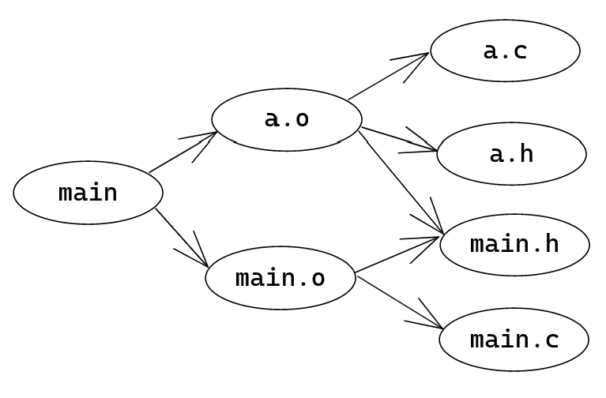
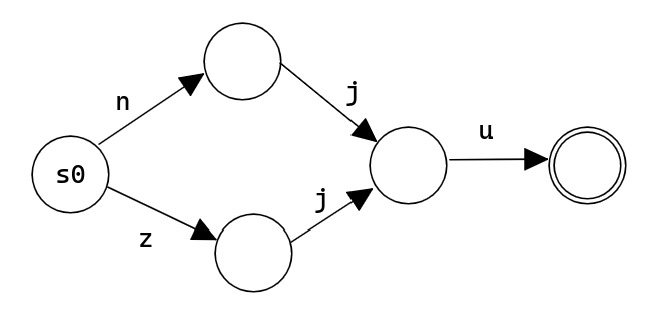
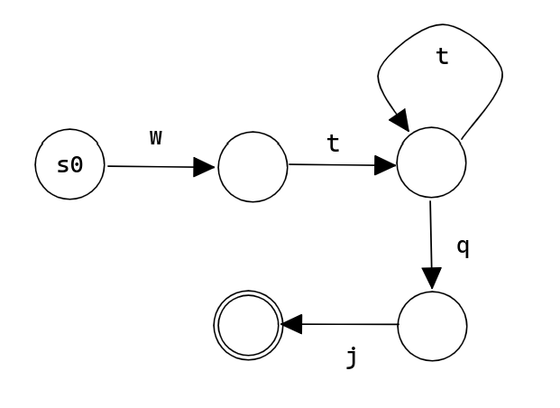

问题求解（三） Open Topic 1 笔记
OT 题目：图在计算机和人工智能研究中有很多应用，例如程序分析中的控制流图、信息检索中的网页链接图、知识表示中的知识图谱等，请调研至少2种应用（其中至多1种来自上述例子），描述应用场景，讨论用图建模的方式，形式化描述问题并概述现有解决方案。
以两个问题入手，分别是：编译系统的构建，以及正则表达式的匹配。
一、编译系统的构建
1.1 编译系统的概念
当一个项目有着单独一个源文件，编译它是容易的；但是当一个项目有着多个源文件，编译会变得复杂：编译有了先后顺序，有了依赖关系，而且编译需要更多的时间。此时，可以使用一些编译系统来组织和优化编译。GNU Make 是一种常见的编译系统。它使用特殊的语法来描述了依赖关系，并且有着智能化的编译控制系统，只编译确实需要编译的文件。
1.2 编译系统的建模
如果把编译系统中的每个需要编译的文件视作有向图 \(G=\langle V, E\rangle\) 中的一个顶点，而边则定义为依赖关系：若编译顶点 \(u\) 需要用到顶点 \(v\) 产生的库文件，则 \(u\) 依赖于 \(v\)，则有 \((u, v)\in E\)。这样，编译系统就被建模为一个有向图。
这个有向图有什么特征呢？它不能有环。因为若存在环 \(u_1\to u_2\to \cdots u_k\to u_1\)，则对于环上任意一点，不妨是 \(u_1\)，要编译它，它依赖于 \(u_2\) 的结果，进一步依赖于 \(u_3\) 的结果...依次类推，它依赖于 \(u_1\) 的结果，故依赖它需要用到它自己的结果，这是不现实的。
因此，这个图是一个有向无环图(directed acyclic graph, DAG)，它有着很好的性质：在上面动态规划没有后效性（存在拓扑序）。
例如，对于以下一个简单的项目：
1 | /home/rijuyuezhu/Playground |
其中 Makefile 为
1 | main: main.o a.o |
其依赖关系图为

1.3 GNU Make 的核心工作原理
GNU Make 根据给定的依赖关系，构建出一个有向无环图，在编译时，先依次编译它依赖的顶点（从它出发可以直接到达的顶点），再编译它自己。
形式化的问题描述即为：给定 DAG \(G=\langle G, E\rangle\) 和 \(u\in V\)，要求按照正确的编译顺序（依赖顺序）得到 \(u.result\)。
使用动态规划，可以避免重复编译。此处使用记忆化搜索的方式是高效的。
1 | is_compiled = [0] * N |
时间复杂度 \(O(n+m)\)。
1.4 GNU Make 的智能化编译控制
当某个顶点所有的依赖顶点的编译结果的时间戳都未比当前顶点编译结果的时间戳晚，那么说明当前顶点的编译结果已经是最新的了，不需要重新编译。
1 | is_compiled = [0] * N |
在多次编译中有很大的优化效果。
1.5 编译系统的本质
它的图论本质就是使用有向无环图表达偏序关系。依赖的本质是偏序关系（反自反性、反对称性、传递性）
1.6 其他偏序关系
例如，软件包管理器管理软件依赖、to do list 进行事情先修条件的组织等，以及更数学的集合的包含关系等，动态规划的状态依赖等都是一种偏序关系，可以使用 DAG 进行建模求解。
如果是全序关系，那么其实可以使用线性表（链）维护。链和树是特殊的图。
1.7 扩展 1
思考题：刚刚提到的依赖管理和网络链接图、函数调用关系图（若
A() 调用 B()，建边
A->B）有什么本质区别？
答：正如函数递归可以自己调用自己、或者相互递归调用，后两种关系得到的图可能含有有向环，和 DAG 具有许多不同的性质）
1.8 扩展 2
除了依赖关系，使用图可以维护更多的关系：比如用有向边代表有向信息；用无向边代表双向信息（例如社交网络中的好友关系）；用带权边代表边独属的信息（例如知识图谱中的不同种类的信息）。
二、正则表达式的匹配
2.1 正则表达式和自动机介绍
正则表达式可以用来查找替换识别固定格式的字符串1。它使用特殊语法来描述字符串的格式：例如用
[nz]ju 可以匹配 nju 和
zju，wt+qj 可以匹配 wtqj,
wttqj, 可以有任意多个 t。
如果问求一好好学了的话，同学们知道可以用非确定性有限状态自动机(NFA)来进行正则表达式（最基础功能，等价与正则语言的）的匹配，比如把匹配到了正则表达式第 \(i\) 个字符作为第 \(i\) 个状态。还可以通过进一步的算法将 NFA 转化为 DFA。
有限状态自动机由五大部分组成：\(\Sigma\) 输入字母表；\(S\) 是状态的非空有限集合；\(S_0\) 是初始状态集合；\(\delta\) 是状态转移函数；\(F\) 是终态集合。这种数学模型可以通过图论建模：对于 \(S\) 中的每个元素（即一个状态），都对应于图 \(G\) 中的一个顶点；状态转移函数 \(\delta(u, c), c\in \Sigma\) 定义了所有从 \(u\) 出发的边。有限状态自动机匹配一个字符串 \(s_0s_1s_2\cdots s_m\)，看是否存在一个状态列表 \(\langle u_0, u_1, \cdots ,u_{m+1}\rangle\)，使得 \(u_0\in S_0\), \(\delta(u_0, s_0)=u_1\), \(\delta(u_1, s_1)=u_2\), ...， \(\delta(u_m, s_m)=u_{m+1}\), \(u_{m+1}\in F\)。如果是 NFA，允许 \(\varepsilon\) 移动。于是，就可以把正则表达式转化为 NFA 来进行字符串匹配。对于长度为 \(n\) 的正则表达式去匹配长度为 \(m\) 的字符串，时间复杂度 \(O(nm)\)；如果进一步转化为 DFA，时间复杂度 \(O(m)\)，但是需要的空间可能是 \(O(2^n)\) 的。
例如，正则表达式 [nz]ju 构造的状态机为

正则表达式 wt+qj 构造的状态机为

2.2 自动机相关算法
有限状态自动机是一个特殊的图，可以用特殊的算法来进行处理。例如，由于 DFA 和 NFA 的等价性，存在算法将 NFA 转化为 DFA；DFA 最小化相关算法可以优化 DFA 的存储。另外，由于 FSA 的特殊性，可以在 FSA 上进行动态规划（无后效性来自于，考虑字符串的匹配位数 \(i\)，则顶点的状态只依赖与 \(i-1\) 时所有顶点的状态）。
比如，用 NFA 进行字符串匹配时，就可以使用动态规划，用 \(f[i, j], 1\le i\le m, 1\le j\le n\) 表示匹配字符串的前 \(i\) 个字符是否可以到达自动机的状态 \(j\)。状态转移方程由 \(f[i-1, \cdot]\) 转移到 \(f[i, \cdot]\)。转移方程略，需要注意 NFA 可能的 \(\varepsilon\) 转移。
2.3 其他自动机相关的应用
例如，现代计算机是一个有限状态自动机，可以利用
<存储器值1, 存储器值2, ..., 存储器值m>
（包括计数器，寄存器，缓存，RAM
等）的二进制序列来编码自动机的每一个状态；而匹配的字符串则是外界输入。因为现代计算机的内存是有限的，没有无限长的纸带，所以不等价与确定性图灵机。
再例如，在数字逻辑与计算机组成课里，对于时序逻辑电路的设计，使用了确定性有限状态自动机来建模状态的切换。从这个角度，时序逻辑电路也是一个状态机（但是并不是返回 Y/N，而是每次转移都有输出）。
当然，自动机用得最多的可能还是在字符串理论中，很多算法依赖于一些特殊的自动机（如 Aho–Corasick algorithm，Suffix automaton）等等。这些算法在字符串问题中应用广泛。